基礎導入9教材・phone/tablet
Island flag-on、DEV Chromium。390×844 / 768×1024。実予約・実入力・保存・再読込の20ケース。実機・子どもの理解・本番配布は未認定。元revision 008e0c8bfb1f784c86e8f1b6083c823a9b5189e3、ローカル修正のapp入力hashと画面candidateは実行記録に保持。
390px foundation_tens / due-fixture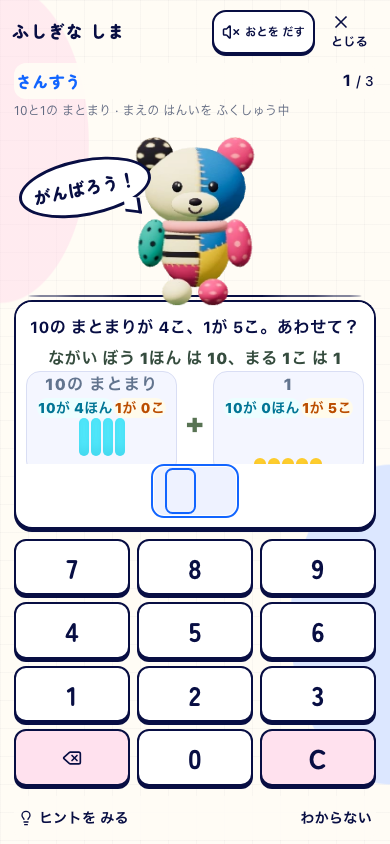
390px foundation_expanded / due-fixture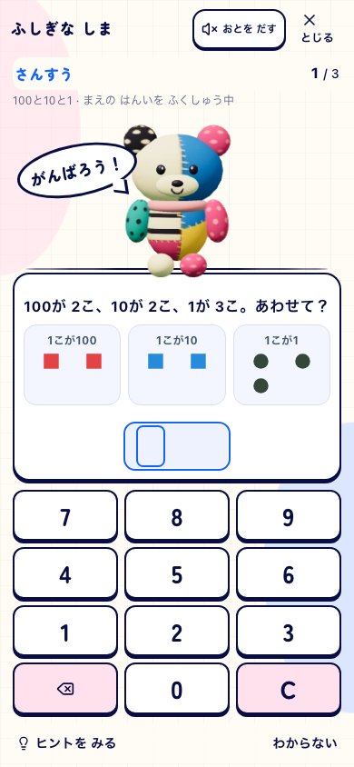
390px foundation_groups / due-fixture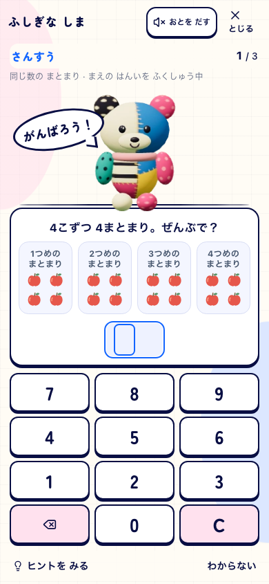
390px foundation_division / due-fixture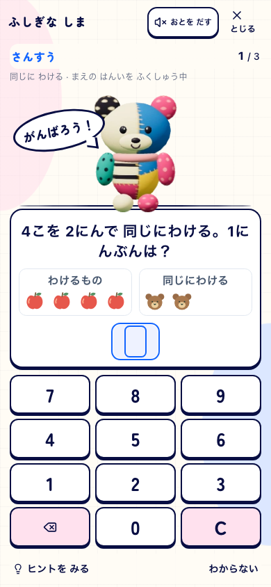
390px foundation_decimal / due-fixture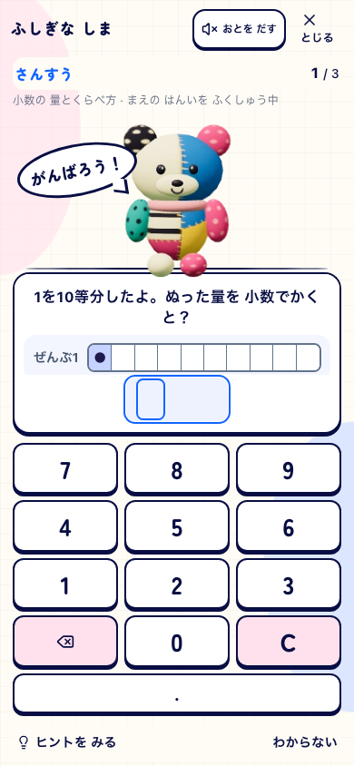
390px foundation_fraction / due-fixture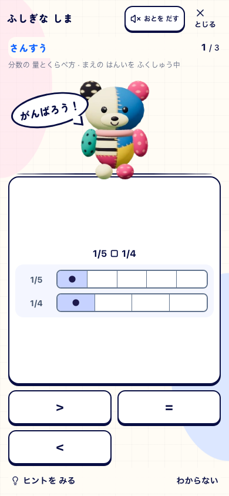
390px foundation_equivalence / due-fixture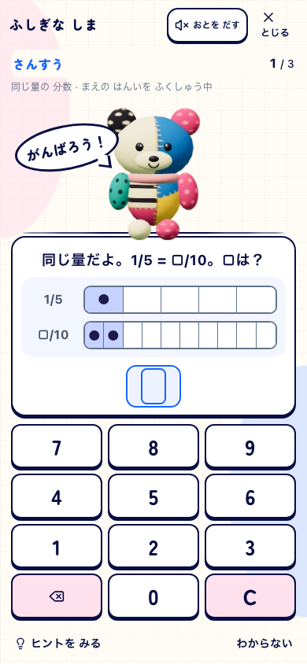
390px foundation_mixed / due-fixture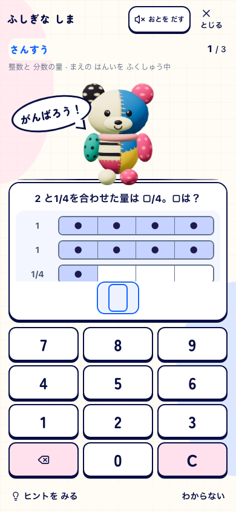
390px foundation_rate / due-fixture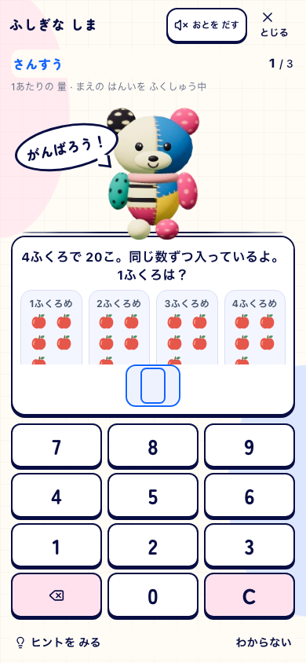
390px foundation_decimal / normal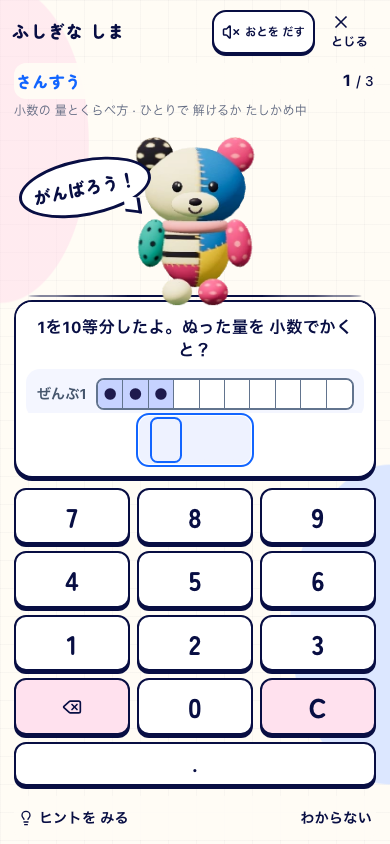
768px foundation_tens / due-fixture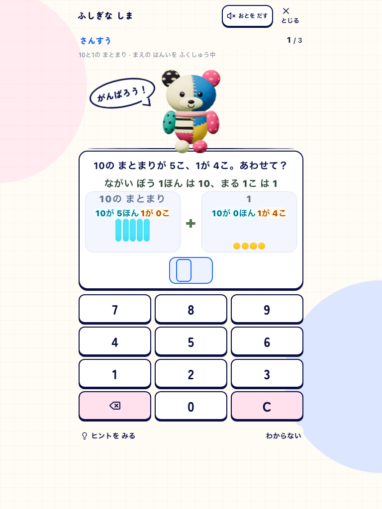
768px foundation_expanded / due-fixture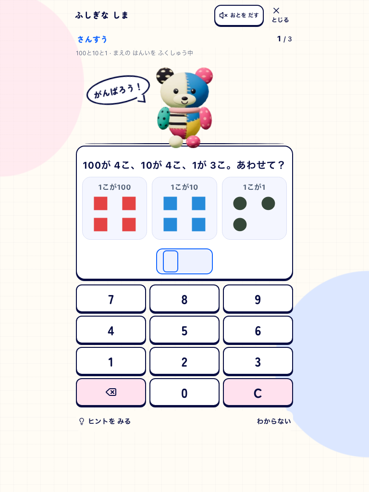
768px foundation_groups / due-fixture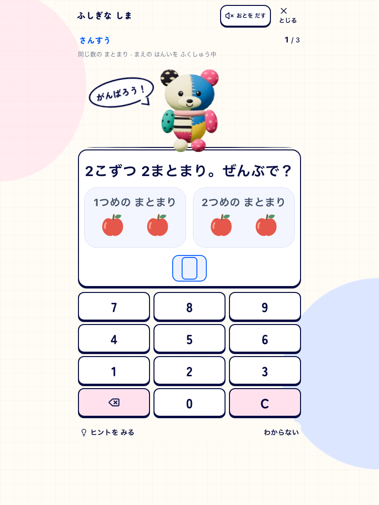
768px foundation_division / due-fixture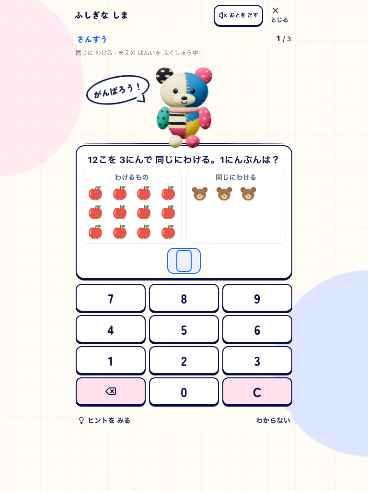
768px foundation_decimal / due-fixture768px foundation_fraction / due-fixture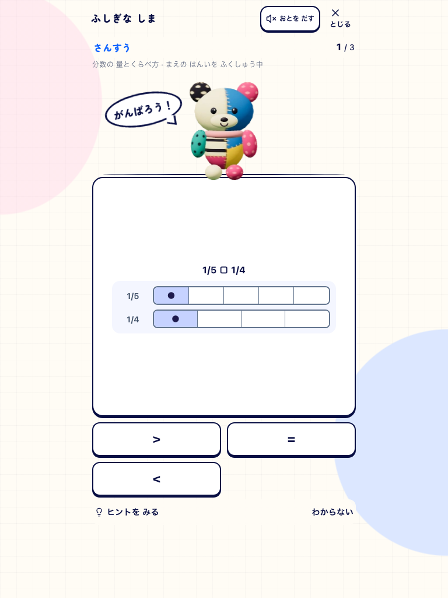
768px foundation_equivalence / due-fixture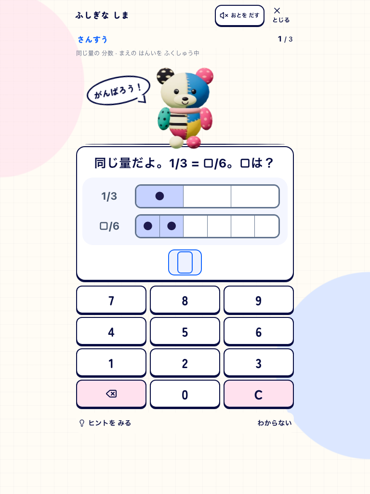
768px foundation_mixed / due-fixture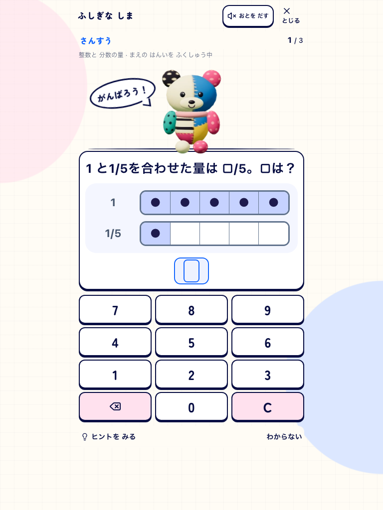
768px foundation_rate / due-fixture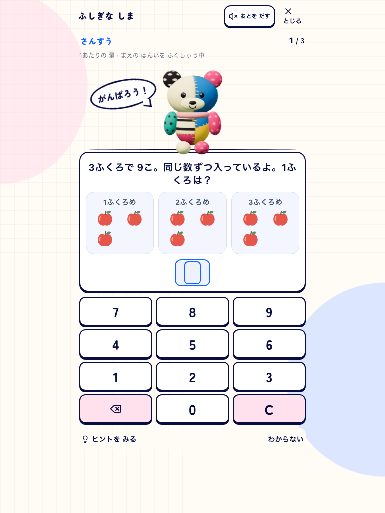
768px foundation_decimal / normal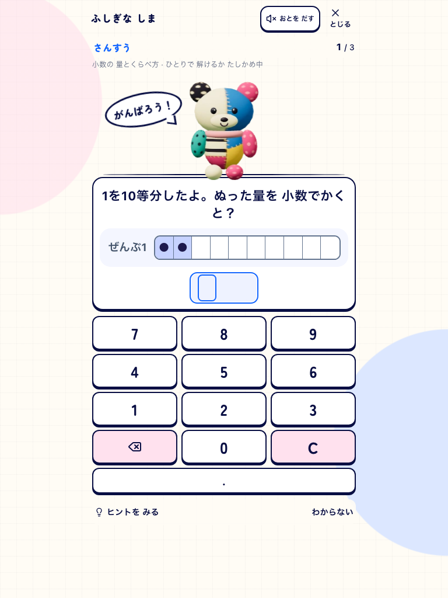